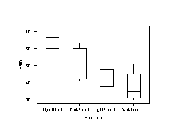

| / Home |
Keywords: boxplots, one-way ANOVA, contrasts, post-hoc test.
Studies conducted at the University of Melbourne indicate that there may be a difference between the pain thresholds of blonds and brunettes. Men and women of various ages were divided into four categories according to hair colour: light blond, dark blond, light brunette, and dark brunette. The purpose of the experiment was to determine whether hair colour is related to the amount of pain produced by common types of mishaps and assorted types of trauma. Each person in the experiment was given a pain threshold score based on his or her performance in a pain sensitivity test (the higher the score, the higher the person’s pain tolerance).
| Variable | Values | ||
|---|---|---|---|
| HairColour | LightBlond, DarkBlond, LightBrunette or DarkBrunette | ||
| Pain | Pain theshold score |
Data file (tab-delimited text)
| Family Weekly, Gainesville, Sun, Gainesville, Florida, February 5, 1978. |
| McClave, J. T., and Dietrich II, F. H. (1991). Statistics. Dellen Publishing, San Francisco, Exercise 10.20. |
Pain threshold decreases as hair darkness increases (blonds are tougher!). Light blonds are significantly different from both brunette categories. Other contrasts are not significant.

|
Home - About Us -
Contact Us Copyright © Gordon Smyth |